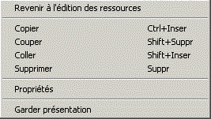

Revenir à l’édition des ressources : Revient à l’arbre d’édition des ressources.
Copier : Copie la sélection dans le presse-papiers.
Couper : Détruit la sélection avec recopie dans le presse-papiers.
Coller : Insère le contenu du presse-papiers.
Supprimer : Détruit la sélection sans recopie dans le presse-papiers.
Propriétés : Se place dans la fenêtre des propriétés du bouton sélectionné.
Garder présentation : Les paramètres de présentation du bouton sélectionné (police du texte) deviennent les paramètres par défaut pour les boutons de barres d’outils (à la prochaine création d'un tel bouton, ces paramètres seront proposés par défaut).